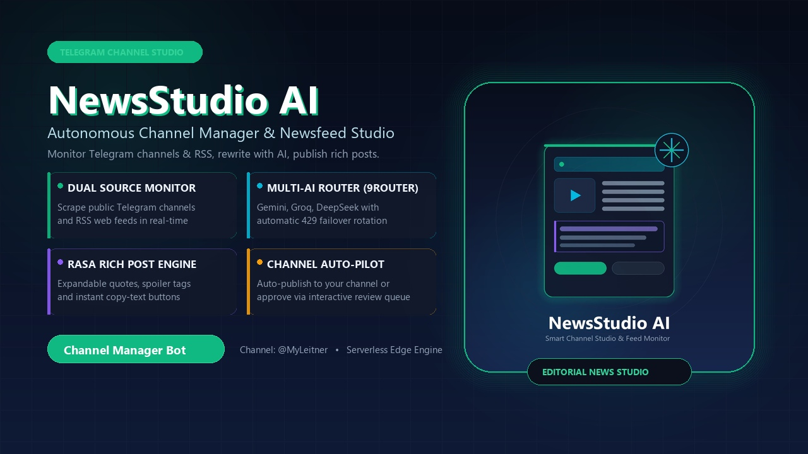

پایش مستمر فیدهای خبری معتبر، بازنویسی هوشمند به زبان ژورنالی جذاب، مدیریت استخر نامحدود کلیدهای AI با سیستم ضداِسپم تجمیع بولتنهای ساعتی — بدون نیاز به خرید سرور یا VPS!

ببینید هوش مصنوعی چگونه اخبار خام و فیدهای خبری را به پستهای تحریریه یا بولتنهای ساعتی تبدیل میکند:
مایکروسافت در آخرین گزارش مالی خود برای نخستین بار ارقام تفکیکی پلتفرم ابری Azure را فاش کرد؛ رشدی فراتر از پیشبینی والاستریت با اتکا به تقاضای انفجاری برای سرویسهای هوش مصنوعی OpenAI.
تیم سبز با تزریق میلیاردها دلار به خطوط تولید TSMC در حال برطرف کردن بحران کمبود پردازندههای گرافیکی بلکول است.
اخترشناسان با بهرهگیری از تصویربرداری با وضوح فوقالعاده موفق به شناسایی جرمی جدید فراتر از مدار پلوتو شدند.
ابرخودروی سوپراسپرت جدید با بدنه تمام مس چکشکاری دستی توجه کلکسیونرهای برتر جهان را به خود جلب کرد.
تمام ابزارهای لازم برای راهاندازی و اتوماسیون کامل یک رسانه خبری مستقل در تلگرام:
اجرا مستقیم روی سرورهای ابری رسمی تلگرام بدون نیاز به VPS، داکر، تنظیم پورت یا پرداخت هزینه ماهانه سرور.
پشتیبانی همزمان از کلیدهای جمینای، گروک، دیپسیک و امکان افزودن هر سرور یا کاستوم پروایدر دلخواه با Base URL.
تست آنلاین تاخیر (Latency)، احراز هویت کلیدها و کشف خودکار مدلهای پرسرعت و رایگان همراه با قابلیت کپی نام مدل.
در صورت وجود ۳ خبر یا بیشتر در ساعت، ربات آنها را در یک پست شیک با لینک مستقیم تجمیع میکند تا کانال شلوغ نشود.
جداسازی کامل کلیدها به ازای هر کاربر با قابلیت جابجایی اولویت با دکمههای ⬆️ و ⬇️ درون کیبورد شیشهای.
داشبورد جامع تفکیکی امروز، هفته و ماه به همراه میزان توکنهای ورودی/خروجی و تفکیک پروایدرها با دستور /tokens.
امکان فوروارد کردن هر پیام طولانی یا لینک از کانالها و گروهها به پیوی ربات جهت تبدیل آنی به پست ژورنالی.
انتخاب حالت انتشار خودکار (Auto-Publish) مستقیم در کانال یا حالت دستی با صف پیشنویس جهت تایید و بازنویسی مجدد.
تمام مراحل به سادگی چند دستور ترمینال و بدون دردسر کانفیگ سرور:
در تلگرام به @BotFather پیام دهید، دستور /newbot را ارسال کنید و توکن اختصاصی ربات خود را بردارید.
کدهای پروژه را دانلود کرده و وارد پوشه پروژه شوید:
جدولهای دیتابیس SQLite را اعمال کرده و کدها را مستقیماً روی تلگرام کلود آپلود کنید:
ربات شما در کسری از ثانیه روی سرورهای تلگرام روشن و آماده پاسخگویی میشود!
برای اجرای خودکار اسکنر در هر ۱ ساعت، وارد سایت رایگان cron-job.org شوید و یک وظیفه جدید به آدرس زیر با دوره ۱ ساعت ایجاد کنید: